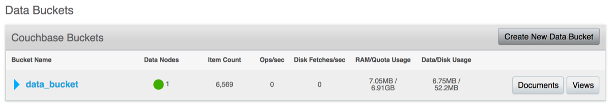
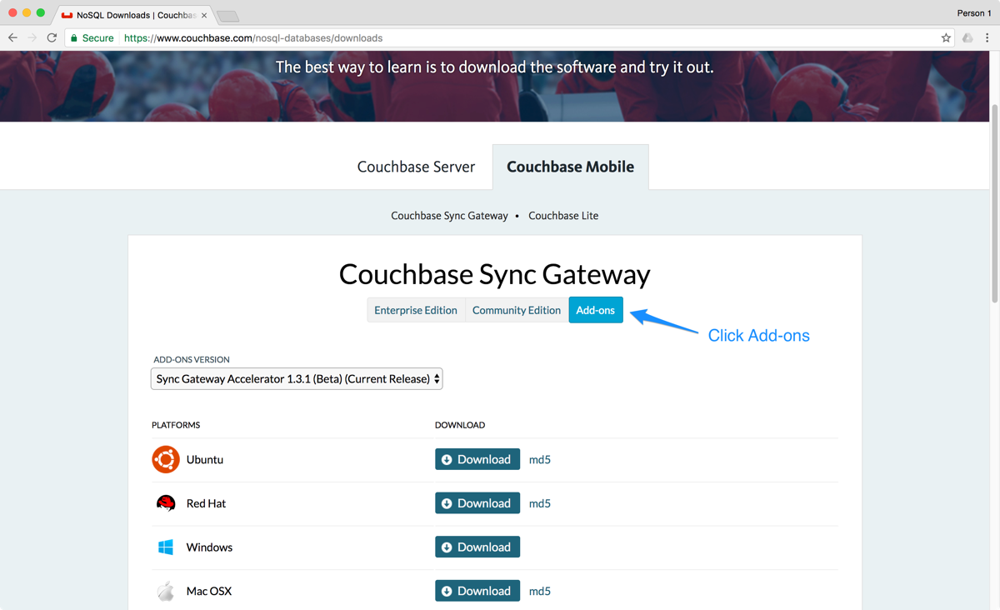
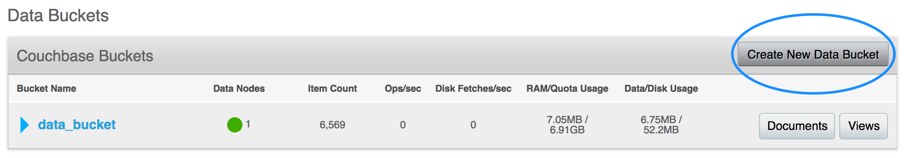
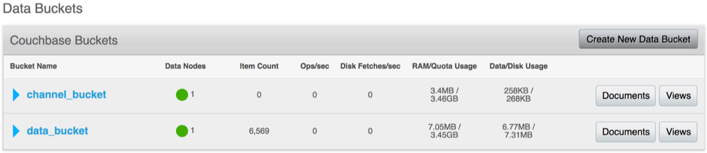
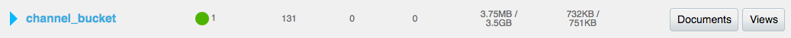

Accelerator
| Sync Gateway Accelerator is no longer officially supported. |
In this guide, you will learn how to scale a Couchbase Mobile deployment with Sync Gateway Accelerator. Before going into the details, it’s important to identify if you wish to scale the read or write throughput of your application’s back-end infrastructure.
As a distributed database system, Sync Gateway and Couchbase Server can already be scaled horizontally. Horizontal scaling is achieved by adding more nodes behind a load balancer which distributes the traffic evenly between each one (see the Install, Upgrade, Scale lesson). This method of scaling is particularly well suited for a scenario with a large amount of read traffic. On the other hand, it wouldn’t suit a scenario where only the write traffic increases.
Sync Gateway Accelerator is designed to cover the second aspect of highly scalable server infrastructure for your application, write traffic.
How does it work?
Changes Feed
The changes feed is at the heart of Couchbase Mobile replication - it provides clients an ordered mutation feed of changes, restricted to the set of documents the user has access to. Clients can disconnect and reconnect, resuming their changes feed where they left off. When a user is granted access to additional documents, those documents are back filled through the changes feed.
Sync Gateway Alone
When Sync Gateway is running in an environment without Sync Gateway Accelerator, each Sync Gateway node listens to the full server mutation feed (DCP or TAP), and builds an in-memory cache of recent changes. Sync Gateway processes the security metadata (channel membership, access grants) for each document as it arrives over the feed.
To optimize this process, Sync Gateway maintains an in-memory cache of recent changes in each channel (step 3) which is used to serve the GET/POST /+{db}+/_changes requests (step 4). When a client requests changes, Sync Gateway first attempts to serve the request from the in-memory channel cache.
If the cache isn’t sufficient, Sync Gateway issues a view query to Couchbase Server to retrieve the non-cached result for the channel(s).
So as write throughput increases, the cache for a particular channel is invalidated more frequently and every Sync Gateway node needs to issue a view query to update the in-memory cache and serve changes feed requests.
Sync Gateway Accelerator
The goal of Sync Gateway Accelerator is to move the mutation feed processing off Sync Gateway nodes, and instead distribute this work across a cluster of Sync Gateway Accelerator nodes. In a cluster with Sync Gateway and Sync Gateway Accelerator deployed, the server DCP feed is sharded across the Accelerator nodes. Each accelerator node processes a subset of the DCP feed, and persists the set of documents per channel to a backing bucket (the 'channel index' bucket). When a client requests changes from a Sync Gateway node, that node retrieves the changes from the channel index bucket.

In this configuration, the Sync Gateway nodes support your applications (Web, Mobile, IoT) as normal, while Sync Gateway Accelerator handles the channel indexing. Separating the two workloads in distinct entities makes it possible to scale both Sync Gateway and Sync Gateway Accelerator to handle much larger write throughput.
Example
Prior to installing Sync Gateway Accelerator you must have a running instance of Sync Gateway persisting documents to Couchbase Server. In this guide, we will assume the following components have already been configured, and for simplicity’s sake are all running on the same host.
-
A Couchbase Server cluster is up and running with a bucket called "data_bucket". A bucket cannot be renamed so if you already have a bucket with a different name that’s ok. You’ll have to replace it with your bucket name where applicable in the following steps of this section.
As you can see on this image, the bucket contains a few thousand documents that were added through the Sync Gateway REST API.
-
A Sync Gateway instance persisting the documents to the data bucket with the following configuration file.
{ "log": ["HTTP+"], "databases": { "app_name": { "server": "http://localhost:8091", "bucket": "data_bucket" } } }Again, if you are following this guide with an existing system already running, your configuration may differ slightly.
Note that Sync Gateway Accelerator doesn’t provide further scalability to deployments that use bucket shadowing. Bucket shadowing is being deprecated in 1.4 and will be removed in an upcoming version of Couchbase Mobile (2.x).
Sync Gateway Accelerator
-
Download Sync Gateway Accelerator from the Couchbase Downloads page.
 -
Create a new bucket called "channel_bucket" in the Couchbase Server cluster.
 -
Next, create a new file called accel-config.json. That’s where you must specify the location of the channel and data buckets.
{ "log": ["HTTP+"], "adminInterface": ":4986", "cluster_config": { "server": "http://localhost:8091", "bucket": "data_bucket", "data_dir": "." }, "databases": { "app_name": { "server": "http://localhost:8091", "bucket": "data_bucket", "channel_index": { "writer": true, "server": "http://localhost:8091", "bucket": "channel_bucket" } } } }There are a few points to note here: The
cluster_configsection is defined at the root level. This is used to manage cluster communication. It specifies the bucket that should be used to store shared Sync Gateway Accelerator cluster information (server, bucket), and a local location to write runtime configuration files (data_dir). It is possible to reuse the existing data bucket in thecluster_configbucket (the one used by Sync Gateway alone). The default listening port for Sync Gateway Accelerator is4985. Here, we’re setting it to4986to avoid using a port that conflicts with Sync Gateway if they are both started on the same node. ** The"writer": trueproperty specifies that this Accelerator instance must persist the channel index to the Couchbase Server channel index bucket. -
Start the Sync Gateway Accelerator node.
~/Downloads/couchbase-sg-accel/bin/sg_accel accel-config.jsonNotice the document count is now increasing in
channel_bucketbecause the channel index data is being stored there.To complete the installation, the Sync Gateway configuration file must be updated to reflect the new location of the channel index (i.e
channel_bucket).
Sync Gateway
Follow the steps below to update the Sync Gateway configuration file. It must be updated for every instance that was previously running without Sync Gateway Accelerator.
-
Update your sync-gateway-config.json with the following.
{ "log": ["HTTP+"], "databases": { "app_name": { "server": "http://localhost:8091", "bucket": "data_bucket", "channel_index": { "server": "http://localhost:8091", "bucket": "channel_bucket" } } } } -
Restart Sync Gateway with the updated configuration file.
~/Downloads/couchbase-sync-gateway/bin/sync_gateway sync-gateway-config.json
The installation of Sync Gateway with Accelerator is now complete. Couchbase Lite clients can continue replicating to the same endpoint as if nothing changed.
Service Installers
You can download Sync Gateway Accelerator from the Couchbase
download page or download it directly to a Linux system by using the wget or curl command.
wget {{ site.sg_download_link }}{{ site.sg_accel_package_name }}.debAll download links follow the naming convention:
couchbase-sg-accel-community_<VERSION>-<BUILDNUM>_<ARCHITECTURE>.<EXT>where
-
VERSIONis the release version. -
BUILDNUMis the specific build number. -
ARCHITECTUREis the target architecture of the installer. -
EXTis the file extension.
Once you have downloaded Sync Gateway Accelerator on the distribution of your choice you are ready to install and start it as a service.
Ubuntu
Install sg_accel with the dpkg package manager e.g:
dpkg -i {{ site.sg_accel_package_name }}.debWhen the installation is complete sg_accel will be running as a service.
service sg_accel start
service sg_accel stopThe config file and logs are located in /home/sg_accel.
Note: You can also run the sg_accel binary directly from the command line.
The binary is installed at /opt/couchbase-sg-accel/bin/sg_accel.
Red Hat/CentOS
Install sync_gateway with the rpm package manager e.g:
rpm -i {{ site.sg_accel_package_name }}.rpmWhen the installation is complete sg_accel will be running as a service.
On CentOS 5:
service sg_accel start
service sg_accel stopOn CentOS 6:
initctl start sg_accel
initctl stop sg_accelOn CentOS 7:
systemctl start sg_accel
systemctl stop sg_accelThe config file and logs are located in /home/sg_accel.
Debian
Install sg_accel with the dpkg package manager e.g:
dpkg -i {{ site.sg_accel_package_name }}.debWhen the installation is complete sync_gateway will be running as a service.
systemctl start sg_accel
systemctl stop sg_accelThe config file and logs are located in /home/sg_accel.
Windows
Install sync_gateway on Windows by running the .exe file from the desktop.
{{ site.sg_accel_package_name }}.exeWhen the installation is complete sg_accel will be installed as a service but not running.
Use the Control Panel -→ Admin Tools -→ Services to stop/start the service.
The config file and logs are located in ``.
Configuration Reference
A configuration file determines the runtime behavior of Sync Gateway Accelerator. Using a configuration file is the recommended approach for configuring Sync Gateway Accelerator, because you can provide values for all configuration properties.
When specifying a configuration file, the command to run Sync Gateway Accelerator is:
$ sg_accel accel-config.json